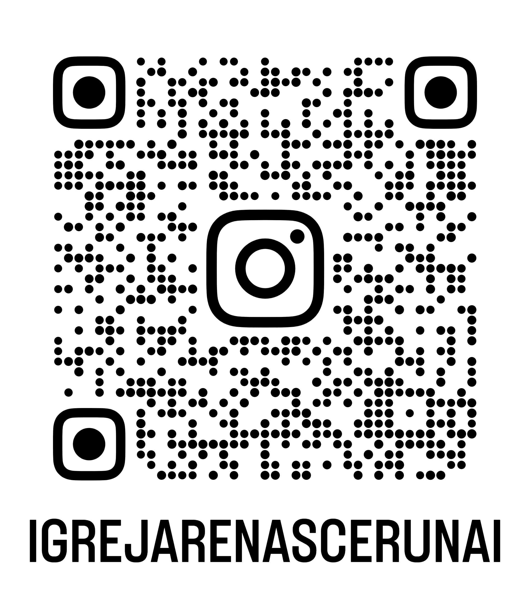

Rede de Jovens
Jovens Renascer
Uma geração apaixonada por Jesus. Conecte-se com a nossa juventude através dos nossos canais oficiais abaixo.
💬
Grupo do WhatsApp
Fique por dentro de todos os avisos, devocionais e resenhas da nossa rede de jovens.
📸
Nosso Instagram
Acompanhe as fotos dos nossos encontros, vídeos inspiradores e nossa agenda oficial.
